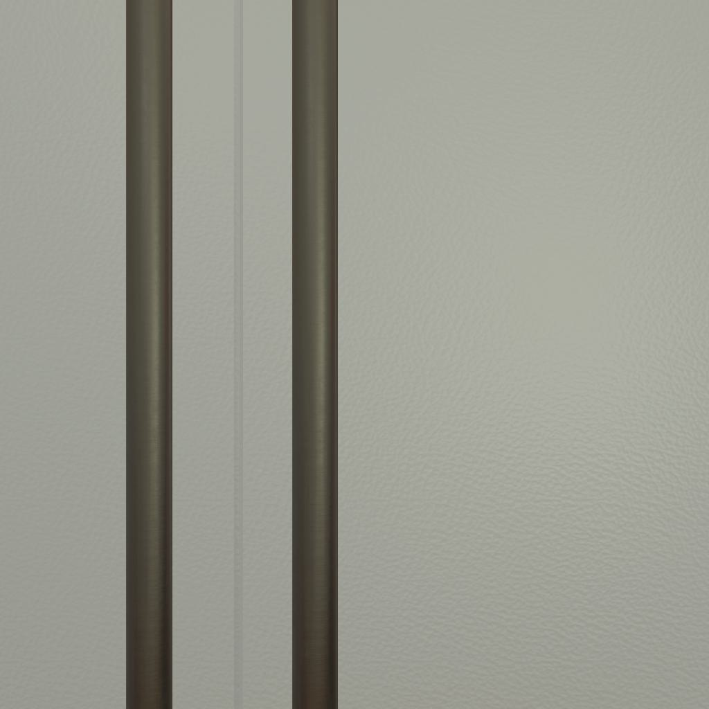

---------------------------------------------------------task: 24---------------------------------------------------------
--------------------------------------------------------------------------------------------------------------------------------------------------------------------
--------------------------------------------------------------------------------------------------------------------------------------------------------------------
Step:--------------------------------------------------------------------------10-------------------------------------------------------------------------------
----------------------------------------
VLM Prompt:
Image1:
Image2:
Image3:
**Instruction**
1. Analyze the provided images to identify all visible household objects and compare the difference between images (e.h. whether the object is opened or not and taken on hand or not), focusing on those relevant to the task description "heat some tomato and put it in fridge."
2. Use the analysis of images and the task hint "The agent must find an object of the desired type, pick it up, go to a microwave, heat the object with the microwave, then find the correct location to place it, and put it down there. The agent does not need to use the microwave button or open the microwave to heat the object, and the agent just needs to do action that is "heat the object with the microwave"." to answer the question: what is the most reasonable action in the choices for the task description "heat some tomato and put it in fridge"?
3. Decide and write the answer using the template: The answer is: (i): , where i is the real number. If there is no desired object in images, search every place based on **Initial Observation** to find the object. And if no one is exactly correct, choose a similar answer.
**Initial Observation**
You are in the middle of a room. Looking quickly around you, you can see cabinet (1-14), countertop (1-2), microwave (1), drawer (1-5), sink (1), sinkbasin (1), coffeemachine (1), stoveburner (1-4), toaster (1), fridge (1), diningtable (1), garbagecan (1), safe (1)
**Answer Choices**
(1): go to cabinet 1
(2): go to countertop 1
(3): go to cabinet 4
(4): go to cabinet 5
(5): go to microwave 1
(6): go to cabinet 6
(7): go to drawer 1
(8): go to drawer 2
(9): go to drawer 3
(10): go to cabinet 7
(11): go to cabinet 8
(12): go to sink 1
(13): go to sinkbasin 1
(14): go to coffeemachine 1
(15): go to cabinet 9
(16): go to cabinet 10
(17): go to drawer 4
(18): go to cabinet 11
(19): go to stoveburner 1
(20): go to stoveburner 2
(21): go to stoveburner 3
(22): go to stoveburner 4
(23): go to cabinet 12
(24): go to toaster 1
(25): go to drawer 5
(26): go to countertop 2
(27): go to cabinet 13
(28): go to cabinet 14
(29): go to diningtable 1
(30): go to garbagecan 1
(31): go to safe 1
(32): open cabinet 3
(33): close cabinet 3
(34): examine cabinet 3
**Answer**
Let's think step by step by following the instructions.
----------------------------------------
----------------------------------------
Original Response:
Firstly, analyzing the images, we can see that they all depict what appears to be a wooden surface, possibly a cabinet or a drawer. The first and third images show a similar object slightly opened, while the second image shows a different pair of objects, possibly a part of the sink or another type of cabinet/drawer, but they are closed and no object is being taken on hand in any of the images.
Based on the task description "heat some tomato and put it in the fridge," we need to find a tomato, heat it in the microwave, and then place it in the fridge. Since none of the images show a tomato, we need to search for it.
Looking at the initial observation, tomatoes are likely to be found in a cabinet or on a countertop, not in drawers, sink, sinkbasin, coffeemachine, stoveburner, toaster, garbagecan, safe, or dining table.
Considering the answer choices and the task hint that we don't need to use the microwave button or open the microwave to heat the object, the agent just needs to do action that is "heat the object with the microwave," the most reasonable action would be to first find the tomato.
Since cabinets are a common place to store food items such as tomatoes and the images suggest cabinets 3, 4, and 5 might be relevant (with one being slightly open), we should check these first. However, choice (32) suggests opening cabinet 3, which is already slightly open according to the images, so this action is irrelevant. Therefore, the next reasonable action would be to either check the other cabinets or go to the countertop where tomatoes may also be placed.
The answer is: (2): go to countertop 1, as it is a common place for food preparation and tomatoes may be placed there ready to be heated. If the tomato is not found there, the next step would be to check the cabinets starting with cabinet 4, following the initial observation list.
----------------------------------------
----------------------------------------
>>> Refine Original VLM Response and Get Pure Action: go to countertop 1, as it is a common place for food preparation and tomatoes may be placed there ready to be heated
----------------------------------------
-----------------------------------------------------------------
Running time: 17.085585117340088 seconds
Total Money: 14.989209999999998
-----------------------------------------------------------------
-----------------------------------------------------------------
Text Observation:Nothing happens.
-----------------------------------------------------------------
UNSUCCEED